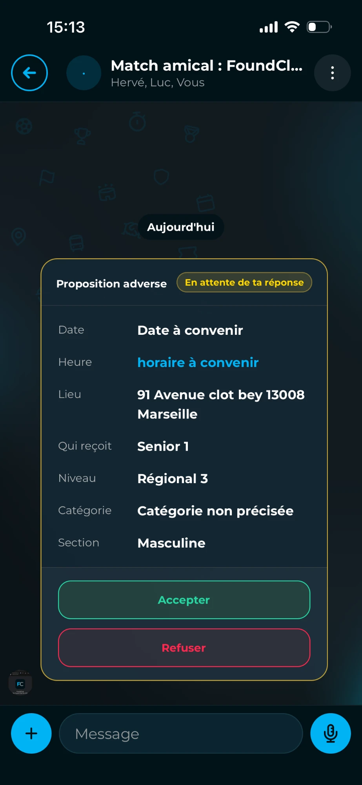
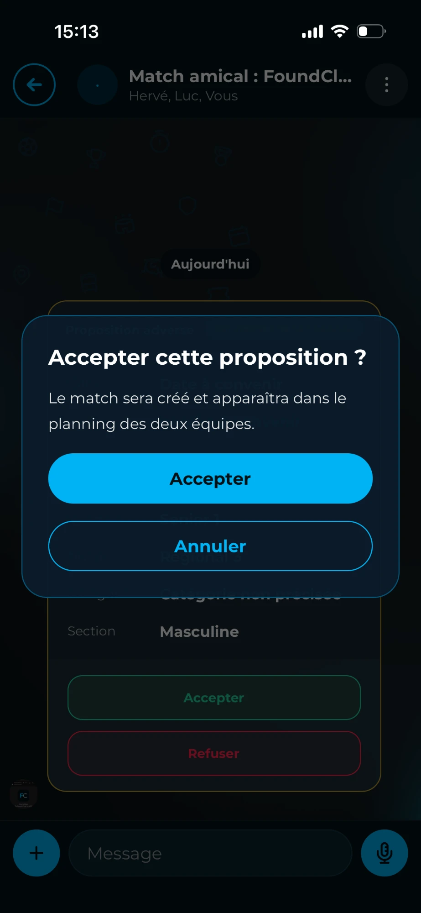

je vais jouer ! »
de référence



la tête de ma mère,
je vais jouer ! »

Les footballeurs professionnels se plaignent parce qu'ils jouent tous les 3 jours.
Dites-vous : nous, en amateur, des fois, pendant un mois, on joue pas.
Entre les week-ends de coupe, les matchs reportés ou les trêves…
Des fois, pendant un mois, on joue pas.
Dites-vous, il y en a, ils payent leur licence jusqu'à 550 € !
À 550 €… la vie de ma mère, je vais jouer !
Mais c'est quoi la raison, en fait ?
Pourquoi on joue pas pendant autant de temps, des fois ?
Les coachs, ils ont toujours la même excuse.
« On sait pas contre qui jouer, faut s'organiser, est-ce qu'on joue à domicile ou à l'extérieur ? »
Mais maintenant, plus d'excuses. J'ai un outil pour vous, les gars :
FoundClub.
Ton coach, il a juste à aller sur l'application,
il cherche un club qui est disponible le week-end où il a envie de faire ce match.
Et il choisit : à domicile ou à l'extérieur.
Que ce soit pendant un match reporté, un week-end de coupe,
pendant la trêve ou même en semaine,
vous pouvez continuer à jouer et garder le rythme.
Maintenant, t'as plus qu'à envoyer la vidéo à ton coach.
Et à 550 € la licence… la tête de ma mère, je vais jouer !